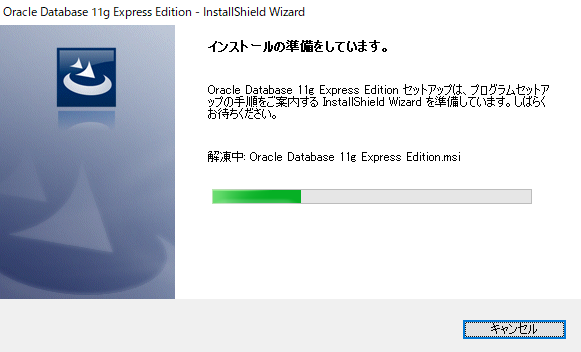
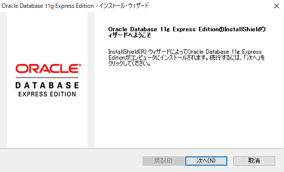
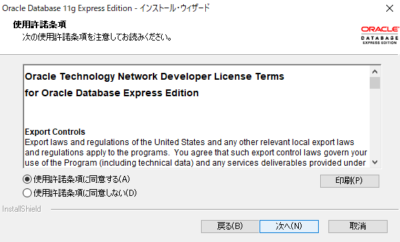
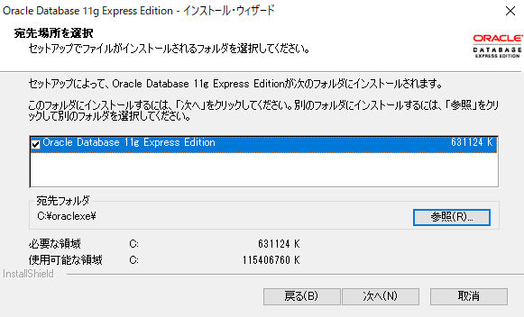
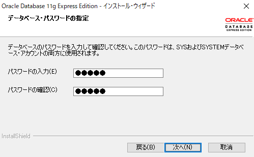
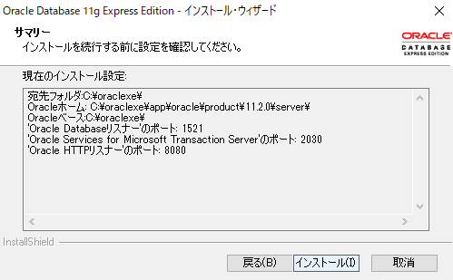
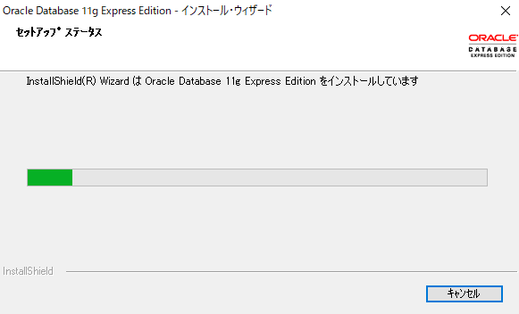
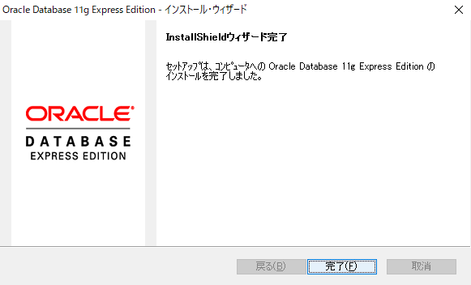

自分だけが好き勝手に使える Oracle 環境がほしくなったので、無償で利用できる Oracle XE (Oracle Database Express Edition) をインストールした。
特にむずかしい点はなかったが、インストールの手順をメモしておく。
実行環境
- Windows 10 Pro Build 1809 (64bit)
- Oracle Database 11gR2 Express Edition for Windows x64 (Oracle XE)
インストーラのダウンロード
前提として、インストーラのダウンロードには Oracle アカウントが必要になる。
持っていない場合はアカウントを作成しておくこと。
アカウント登録は無料である。
Oracle XE のインストーラは、以下の URL からダウンロードできる。
Oracle Database XE Prior Release Archive (https://www.oracle.com/database/technologies/xe-prior-release-downloads.html)
今回使ったのは Windows x64 だが、それのほかに Windows (32bit) と Linux x64 のインストーラが提供されている。
自分の環境に合わせてダウンロードしてほしい。
Oracle XEのインストール手順
まずはダウンロードしたファイル（OracleXE112_Win64.zip）を解凍する。
次に解凍されたファイルにある、セットアップファイル（DISK1\setup.exe）を実行する。
（ダブルクリックで OK）
インストーラが起動するので、あとはインストール・ウィザードに従う。
（特に変更する項目はない。デフォルトでよいだろう）
インストールの準備をしています

InstallShield ウィザードへようこそ

使用許諾条項

使用許諾条項に同意するを選ぶ。
宛先場所を選択

データベース・パスワードの指定

SYS および SYSTEM ユーザーに設定するパスワードを入力する。
くれぐれも忘れないように。サマリー

セットアップステータス

Install Shield ウィザード完了

自動起動しないようにしておく
インストール後の設定では、Oracle XE は自動起動されるようになっている。
使用頻度にもよるだろうが、自動起動しないように変更しておくことをおすすめする。